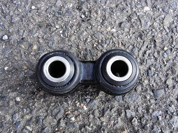
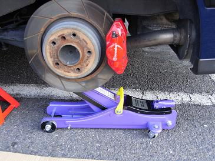
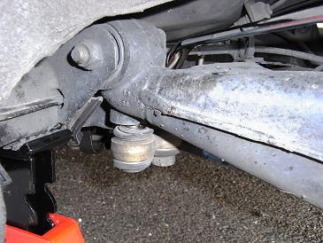
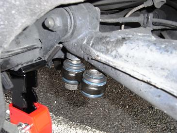
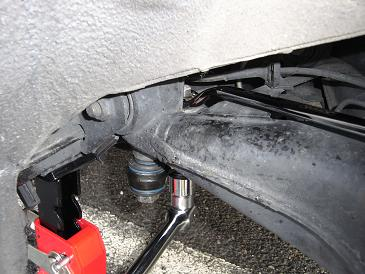
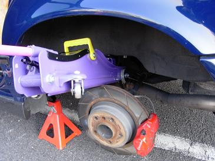

 と、書きつつ今回もサードパティー品なのだ（笑 やっぱり価格の魅力に負けてしまう。。
|
 ボルトを緩める前に、少しジャッキでロアアームを上げておくとボルトが緩みやすい。
|
 ガタガタのピットマンアーム
|
 取り付けるときは、手前のボルトを先にはめておく。 この時、奥のボルトがロアアームに通りやすいようまだボルトはしっかり締めないでおく。
|
 ジャッキでロアアームを上げたり下げたりしつつ、ボルトをロアアームへ通す。 ボルト、ナット共に22mmだ。 かなりきつく締っていたので、力いっぱい締めこんだ。 右側も基本的に同じだ。
|
 この作業時にアッパーマウントも交換した。 そのために、サスペンションを外した状態でピットマンアームを交換したのだ。 すると、、ピットマンアームがシッカリしているのでロアアームが人力では下がらず。。 サスペンションが取り付けできなくなったのだ（笑 そこで、ジャッキをロアアームとシャーシの間に突っ込みロアアームを下げた（爆 交換後は「コトコト音」は消え、また気持ちよく乗れるようになった。 |